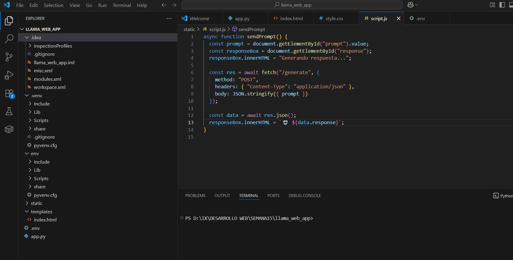
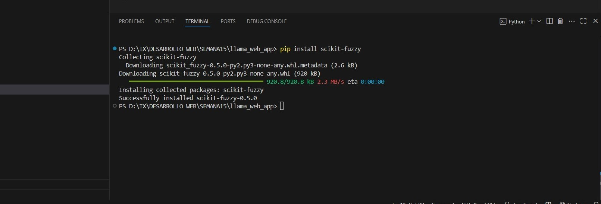
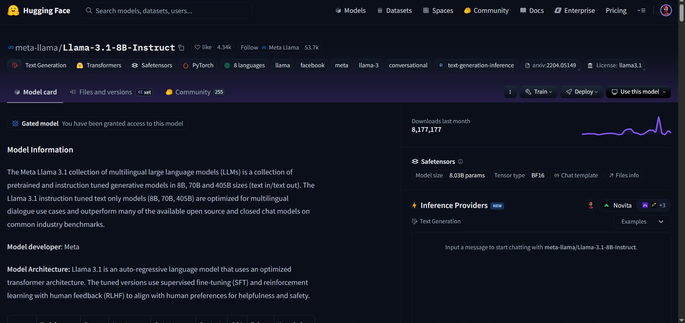

Objetivos de Aprendizaje
- Diseñar sistemas inteligentes simples aplicando estructuras de decisión tipo IF-THEN.
- Implementar lógica difusa para la toma de decisiones con variables lingüísticas.
- Desarrollar una interfaz web con Flask que interactúe con un modelo de lenguaje LLM (LLaMA 3).
- Reforzar la creación de clases, herencia y lógica condicional en Python.
- Comprender el ciclo completo de integración de un modelo IA en un sistema web personalizado.
Tecnologías Utilizadas
- Lenguaje: Python 3.9+
- Framework: Flask
- Bibliotecas: transformers, torch – Hugging Face, scikit-fuzzy – Control difuso
- Modelos de IA: LLaMA 3 (Meta, vía Hugging Face)
- Frontend: HTML, CSS, JavaScript
- Gestor de paquetes: pip
- Herramientas adicionales: Git, entorno local con navegador, .env
¿Que se hizo?
1. Configuración de entorno para sistemas expertos:
- Creación de carpetas y archivos Python (main.py)
- Programación de clases (Persona, Paciente)
- Implementación de lógica condicional con funciones de diagnóstico.

2. Instalación y uso de lógica difusa:
- Instalación de scikit-fuzzy con pip.
- Definición de conjuntos difusos para temperatura y potencia.
- Simulación de sistema climatizador.

3. Configuración de entorno para LLM:
- Instalación de transformers, flask, torch, python-dotenv.
- Descarga y carga del modelo LLaMA 3 desde Hugging Face.
- Creación de estructura de proyecto Flask con HTML, CSS y JS.
- Definición de rutas, renderización y manejo de POST request.

Ejercicios
Ejercicios Propuestos de Desarrollo API con Spring
- El primero consistió en la creación de un sistema experto simple
para diagnóstico médico usando clases en Python y reglas condicionales IF-THEN. El segundo
implementó un sistema de climatización inteligente utilizando lógica difusa con la biblioteca
scikit-fuzzy, permitiendo ajustar la potencia del aire acondicionado según la temperatura.
Finalmente, el tercer ejercicio integró el modelo de lenguaje LLaMA 3 en una aplicación web
desarrollada con Flask, permitiendo al usuario interactuar con el modelo a través de una interfaz HTML dinámica.
Conclusión
La práctica permitió desarrollar desde cero tres enfoques complementarios de inteligencia artificial:
reglas lógicas, lógica difusa y modelos generativos avanzados. Se integró la teoría de sistemas
inteligentes con el desarrollo real de aplicaciones, fortaleciendo tanto habilidades técnicas como de razonamiento lógico.
Reflexión
Esta semana demostró cómo es posible construir soluciones inteligentes completas con herramientas de código abierto.
Desde un diagnóstico médico básico hasta un chatbot con LLaMA 3, se evidencia cómo la IA puede adaptarse a distintos
niveles de complejidad. La práctica fomenta pensamiento algorítmico, integración de IA moderna y diseño orientado al usuario.
Recursos Utilizados